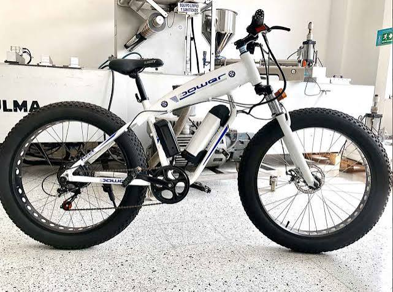

Nuevo Jueves a sábado
Rueda Nocturna
Descubre Medellín en bici cuando se encienden las luces.
3
rutas
Desde
$55.000
Bicicleta 1 de 12

Nuevo Jueves a sábado
Descubre Medellín en bici cuando se encienden las luces.
3
rutas
Desde
$55.000